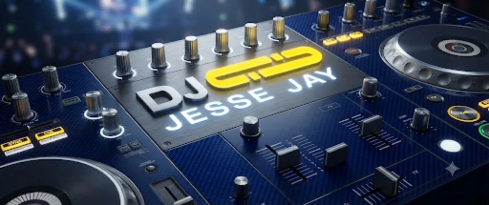

Biografie

Style: funky-groovy-progressive beats, prog.-deep-tech and minimalhouse,"minimal-maximalelectrotrance"
Do you know the feeling „DJ..DJ...all your sound seems the same to me“? Being suddenly taken into a round, remarkably awakening of passion, our party passion, soul carrying voyages, heart space creating horizons and feeling music/sexy! fantasies arise got, seldom since quite a while. That is how Jesse loves to feel when giving himself to the music and this is how he passes on his sound and emotions to the crowd, embracing with his radical sensitiveness. Jesse grew up in his contagious party senses at the individuality-reigning, going mad and „we are family“ philosophical, legendary Clubs like Aera, Labyrinth, SpiderGalaxy, Take A Dance, Hermetschloo and Dachkantine. At Radio Lora he plays each two weeks since 15 years at Galaxy Space Nights 6 hours long, deep-tender holidays of the mind with his timeless, surprising choice of pearl-tracks, heartful and at the same time porno stories, seamlessly woben with his distinctive DJ's skills. He gives the same dimension of importance to play at the beginning, as a main act or the outro since 1997. A loyal Vinyl Lover, equally pleasuring with the CDJ. Do you know the feeling of an unconditional, passionate music trip, too? www.facebook.com/DjJesseJay www.lora.ch/sendungen/alle-send…ngen/67?list=Galaxy Space Night
Radio: Galaxy Space Night
Dieser Name steht seit über 10 Jahren für elektronische Musik auf den Lokalradiosendern Radio LoRa in Zürich, Radio Stadtfilter in Winterthur und Radio RaBe in Bern.Jeden Samstagabend auf Radio RaBe und jeden zweiten aus dem Studio in Winterthurpräsentiert euch die GSN Crew das Neuste von und aus der elektronischen Klangwelt. Und jeden zweiten Donnerstagabend zur Geisterstunde, melde ich mich aus Zürich auf der Frequenz von Radio LoRa. Galaxy Space Night gehört gehört...